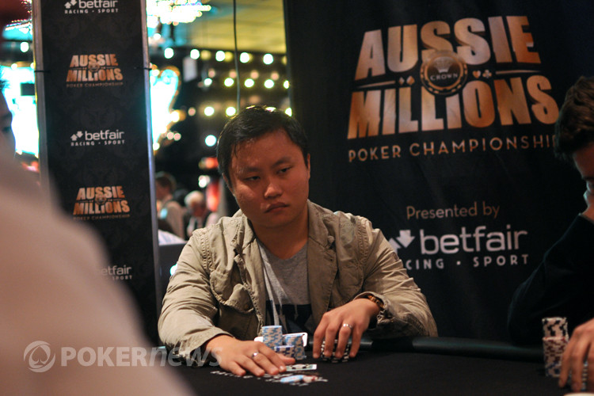

About Me
After studying biochemistry at Duke University, I embarked on an unusual journey of becoming a professional poker player. From 2008 to 2017 I acheived success in this field, becoming a lead instructor at the world renowned training site "Cardrunners.com" and also becoming a pro for "Full-Tilt". During that time, I also successfully started and co-owned a bar/restaurant in Cambridge, MA called "Lord Hobo", invested in several pieces of real estate, and co-created the smartphone app "Blitzpick" that allows Daily Fantasy Sports players to automatically optimize lineups.
Recently, however, with the birth of my second child and my first child reaching an impressionable age, I decided that the stress, unpredictability, and instability of being a professional poker player was too difficult to balance with family life, and decided to retire. Our family of four moved from Las Vegas to Calabasas, CA, where we currently reside. I enjoy challenging myself, and as such, couldn't tolerate the slow pace of retirement. Soon, I was able to discover my passion in programming and web development. I am currently enrolled in the UCLA Full Stack program, and hope to become a competent Junior Developer upon graduation.